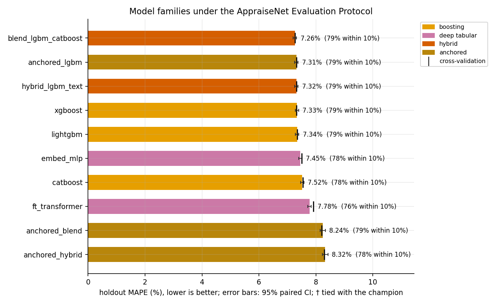
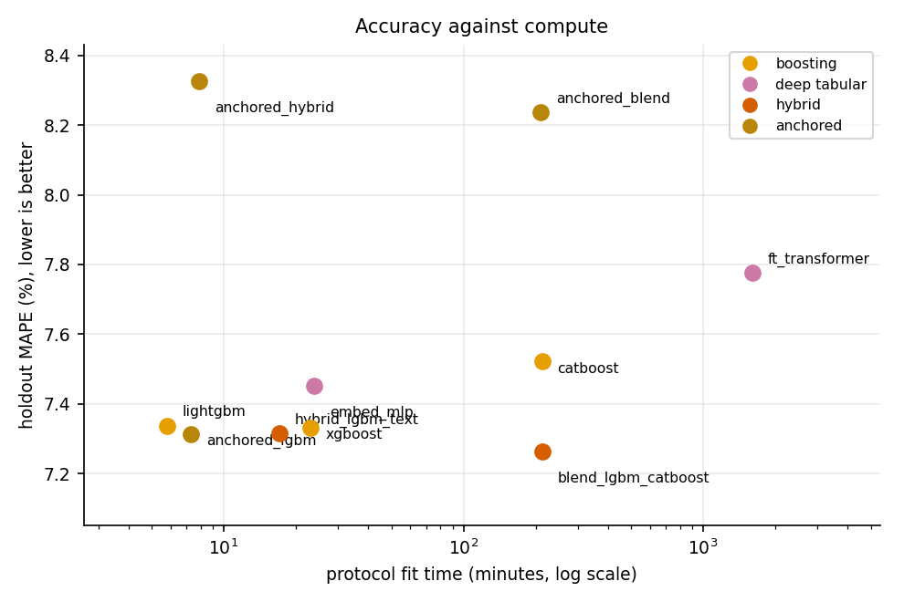
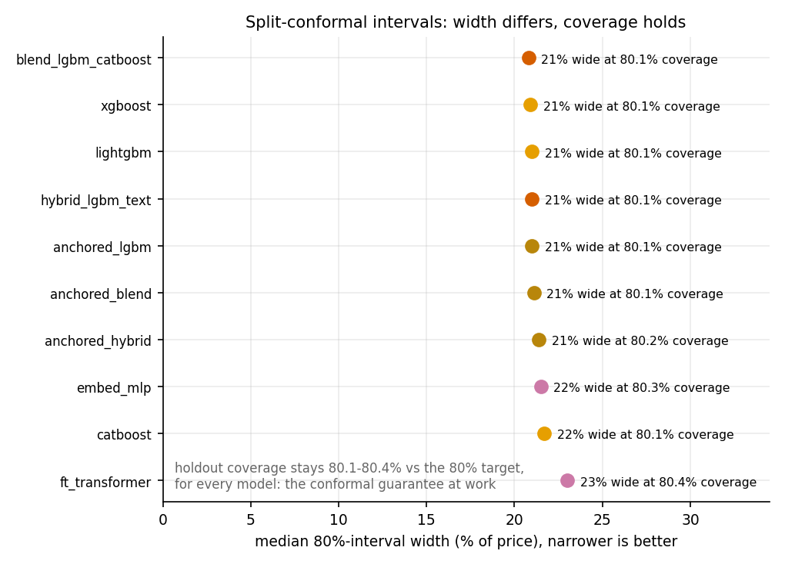
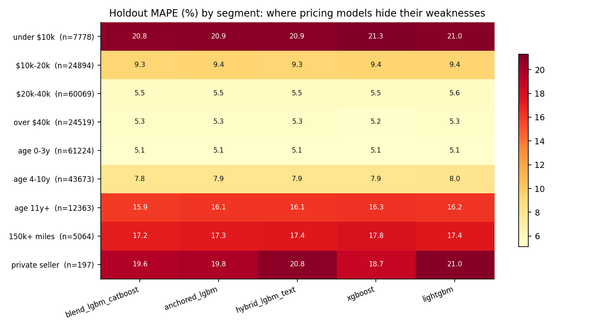

In one paragraph
Used-car valuation studies usually report one accuracy number for one model, without asking whether the evaluation leaked target information, whether the claimed ranking would survive a statistical test, how wide the honest uncertainty really is, or whether the answer still holds when the corpus grows by an order of magnitude. AppraiseNet answers in two tiers. The pilot compares thirteen estimators in six families (linear, instance-based, bagged trees, gradient boosting, deep tabular networks and hybrids) on 38,758 curated US used-vehicle listings; the corpus tier advances the ten configurations that scale to the full 1,174,659-listing corpus on a single workstation and adds three production-faithful anchored designs, in which a fold-fitted ladder of group-median anchors seeds, offsets or bounds the learner under monotone mileage constraints. Both tiers run under the AppraiseNet Evaluation Protocol: a fixed 10% holdout scored exactly once per model, five-fold out-of-fold selection, and every fitted statistic re-learned inside each fold, including engineered trim-positioning, anchor and target-encoding features that would otherwise leak the target. Split-conformal calibration gives every model a distribution-free 80% prediction interval, and every difference is judged with a paired bootstrap on the shared holdout, for all 45 model pairs and for the median error as well as the mean. The study ships as an operable system: a versioned model registry with promote-or-rollback retraining, an idempotent daily ingest path, drift monitoring and a serving API. Every number on this page regenerates from persisted artifacts with one command.
Key findings
Holdout MAPE of the champion on 117,260 unseen cars: a LightGBM and CatBoost blend. 78.9% of cars priced within 10%, median error 4.72%.
What the listing description is worth, pilot against corpus. Usable text survives on under 3% of the larger corpus, and the advantage that crowned the pilot champion nearly vanishes with it.
The anchored blend holds the best median error in the field (4.68%) and the worst mean (8.24%). A leaderboard has to name the summary it is ordered by.
The compute the champion spends to buy its last 0.05 MAPE points over the anchored configuration that production actually deploys.
- Scale rewrites the leaderboard. Every configuration that ran at both sizes improved by 3.4 to 4.6 MAPE points on the larger corpus, and the whole non-anchored field now sits inside half a point where the pilot spread it over nine. Of the 45 model pairs, only 4 remain statistically tied.
- The anchor ladder replaces the text signal. Giving the same booster fold-fitted group-median anchors and monotone mileage constraints instead of the description buys 0.025 MAPE points (95% CI 0.007 to 0.042) over the identical base, and the two configurations are statistically indistinguishable. One needs a listing description; the other needs only the fields every listing carries.
- The bound is what fails, not the anchor. Anchors as features finish second overall; anchors as a hard ±0.75 bound on a residual finish last by mean while leading by median. 96% of the bounded design's misses beyond 50% are over-predictions, and they concentrate under $10,000, where the first ladder rung groups a trim without a model year and the bound then forbids the learner from descending to a fifteen-year-old car's real price.
- The intervals hold, and CQR is now worth its complexity. Empirical holdout coverage stays between 80.1% and 80.4% against the 80% target for all ten models. At corpus scale conformalised quantile regression reaches 80.4% coverage at a median width of 18.2% of price, 2.6 points narrower than the split-conformal interval of the same configuration.
- Deep tabular narrows but does not close. The embedding MLP (7.45%) now passes CatBoost, which it trailed by 0.36 points in the pilot. The FT-Transformer is still last of the non-anchored field while consuming more compute than every other model in the study combined.
- The hard segments are shared. Every strong model struggles on the same cars: under $10k, older than ten years, beyond 150k miles, private-party sellers (16 to 21% MAPE) against about 5% on recent mid-band cars.
The corpus tier: ten models, 1,174,659 listings
CV is five-fold out-of-fold MAPE on the training partition; every holdout column is one scoring pass on the untouched split (117,260 cars). The 95% CI is a paired bootstrap of the shared holdout. Coverage and width describe each model's 80% conformal interval; fit time is the protocol total, five folds plus the final fit.
| Model | Family | CV MAPE | Holdout MAPE | 95% CI | Median APE | Within 10% | Coverage | Width | Fit (min) |
|---|---|---|---|---|---|---|---|---|---|
| LightGBM+CatBoost blend | hybrid | 7.27% | 7.26% | [7.20, 7.32] | 4.72% | 78.9% | 80.1% | 20.8% | 213 |
| Anchored LightGBM | anchored | 7.31% | 7.31% | [7.25, 7.37] | 4.75% | 78.6% | 80.1% | 21.0% | 7 |
| LightGBM + text residual | hybrid | 7.32% | 7.32% | [7.26, 7.38] | 4.75% | 78.8% | 80.1% | 21.0% | 17 |
| XGBoost | boosting | 7.32% | 7.33% | [7.27, 7.39] | 4.79% | 78.8% | 80.1% | 20.9% | 23 |
| LightGBM | boosting | 7.34% | 7.34% | [7.28, 7.40] | 4.76% | 78.6% | 80.1% | 21.0% | 6 |
| Embedding MLP | deep tabular | 7.50% | 7.45% | [7.39, 7.51] | 4.86% | 77.9% | 80.3% | 21.5% | 24 |
| CatBoost | boosting | 7.54% | 7.52% | [7.46, 7.58] | 4.97% | 77.6% | 80.1% | 21.7% | 213 |
| FT-Transformer | deep tabular | 7.92% | 7.78% | [7.72, 7.84] | 5.25% | 75.8% | 80.4% | 23.0% | 1609 |
| Anchored blend (two engines) | anchored | 8.20% | 8.24% | [8.14, 8.33] | 4.68% | 78.5% | 80.1% | 21.1% | 211 |
| Anchored hybrid (residual) | anchored | 8.30% | 8.32% | [8.23, 8.42] | 4.72% | 78.2% | 80.2% | 21.4% | 8 |
Two summaries, not one
MAPE is a mean, so it is a statement about a model's tail; the median absolute percentage error describes the car a user is actually holding. At corpus scale the two disagree about who is best, and the disagreement has a mechanical cause rather than a statistical one.
| Model | Median APE | MAPE | Within 5% | p99 | Miss > 50% | Share of total error from misses > 25% |
|---|---|---|---|---|---|---|
| LightGBM+CatBoost blend | 4.72% | 7.26% | 52.2% | 43.4% | 0.73% | 21.5% |
| Anchored LightGBM | 4.75% | 7.31% | 51.9% | 43.3% | 0.75% | 21.9% |
| LightGBM + text residual | 4.75% | 7.32% | 52.0% | 43.6% | 0.73% | 21.8% |
| XGBoost | 4.79% | 7.33% | 51.8% | 44.2% | 0.75% | 22.0% |
| LightGBM | 4.76% | 7.34% | 51.9% | 43.8% | 0.73% | 21.9% |
| Embedding MLP | 4.86% | 7.45% | 51.1% | 44.4% | 0.75% | 22.2% |
| CatBoost | 4.97% | 7.52% | 50.2% | 44.3% | 0.74% | 21.6% |
| FT-Transformer | 5.25% | 7.78% | 48.1% | 43.5% | 0.70% | 21.5% |
| Anchored blend (two engines) | 4.68% | 8.24% | 52.5% | 67.8% | 1.56% | 32.9% |
| Anchored hybrid (residual) | 4.72% | 8.32% | 52.2% | 68.6% | 1.57% | 33.2% |
The anchored residual engines are the most accurate models in the corpus above $20,000 and the least accurate by far below $10,000, a band that is 6.6% of the holdout and decides the corpus mean:
| Price band | n | LightGBM+CatBoost blend | Anchored LightGBM | Anchored blend | FT-Transformer |
|---|---|---|---|---|---|
| under $10k | 7,778 | 20.79% | 20.91% | 33.86% | 20.29% |
| $10k-20k | 24,894 | 9.26% | 9.37% | 10.03% | 9.65% |
| $20k-40k | 60,069 | 5.48% | 5.51% | 5.40% | 6.07% |
| over $40k | 24,519 | 5.31% | 5.32% | 5.24% | 6.08% |
Figures








The pilot tier: the full zoo at 38,758 listings
The study's first edition ran all thirteen original models on the late-August 2026 corpus snapshot, under the identical protocol. It is the reference point for the classical baselines, whose one-hot and distance costs grow quadratically and cannot ride the full corpus on one machine, and the tier whose champion the corpus tier overturned.
| Model | Family | Holdout MAPE | Median APE | Within 10% |
|---|---|---|---|---|
| LightGBM + text residual | hybrid | 10.75% | 7.33% | 62.4% |
| Stacked ensemble | hybrid | 11.02% | 7.58% | 61.1% |
| LightGBM+CatBoost blend | hybrid | 11.08% | 7.48% | 60.6% |
| XGBoost | boosting | 11.19% | 7.59% | 60.6% |
| LightGBM | boosting | 11.24% | 7.63% | 60.6% |
| CatBoost | boosting | 11.58% | 8.05% | 58.2% |
| Embedding MLP | deep tabular | 11.94% | 8.44% | 56.7% |
| FT-Transformer | deep tabular | 12.36% | 8.90% | 54.7% |
| ExtraTrees | bagged trees | 12.88% | 8.54% | 55.6% |
| RandomForest | bagged trees | 13.49% | 9.24% | 53.0% |
| k-NN comparables | instance | 15.22% | 10.79% | 47.0% |
| Ridge | linear | 18.93% | 14.18% | 37.7% |
| Elastic net | linear | 19.42% | 14.43% | 36.5% |
Full pilot evidence, comparison statistics and model cards are committed under reports/pilot/; the pilot edition of the paper is archived as a PDF.
The AppraiseNet Evaluation Protocol
- A 10% holdout (117,260 listings at corpus scale, 3,893 in the pilot) is drawn once with a fixed seed and scored exactly once per model; it takes part in no selection decision.
- Every fitted statistic is learned inside its cross-validation fold: categorical vocabularies, imputation, standardisation, the engineered trim-tier feature, and for the anchored configurations the anchor ladder, the state price index and the regional target encoding, all of which would leak the target if computed on the full data.
- Out-of-fold predictions supply the selection metrics and the conformal calibration residuals; each model is then refitted on the full training partition and predicts the holdout once.
- Split-conformal calibration in log space gives every model an 80% interval with a distribution-free guarantee; the production model uses conformalised quantile regression for per-car adaptive widths.
- Differences are tested, not eyeballed: a paired bootstrap (4,000 resamples of the shared holdout) puts a 95% confidence interval on each error, on each gap to the leader, and on all 45 model pairs, for the median as well as the mean.
The corpus of 1,174,659 listings was curated from roughly 160 raw fields per record down to 29 modelling columns: vocabulary normalisation, government VIN-decoder enrichment, junk-price and not-a-car removal, per-vehicle deduplication and a label-noise quarantine. Two fields the raw feed carries are deliberately excluded, the first asking price and the derived price drop, because together with the price-cut count they would hand a model the label. The data is proprietary and never ships; a synthetic generator with the identical schema reproduces the whole pipeline, tests and CI.
A study you can operate
- Storage is one URL: an embedded database file or a PostgreSQL connection string; the corpus grew from 38,758 to 1,174,659 listings through an idempotent, fingerprint-deduplicated daily ingest with an audit table.
- Retraining is guarded: a candidate is promoted only if it scores within 0.3 MAPE points of the serving model, otherwise the previous version keeps serving; versions are semantic and archived for rollback.
- Serving runs the anchored LightGBM, the best text-free configuration for the inputs an API receives, and returns the point price with its CQR interval; it hot-reloads on promotion and logs every prediction, and a drift monitor watches recent traffic with population-stability indices.
- Reproducibility: model cards per learner, MLflow tracking, pytest and CI on the synthetic corpus, Docker and Terraform for AWS. One command re-runs the study; one command rebuilds this page's numbers, the figures and the paper.
Citation
Sium, R. H. and Finstuen, D. (2026). AppraiseNet: Calibrated used-vehicle price estimation with classical, deep and hybrid learners [Paper, project page and source code]. Lykios. https://rhs2.github.io/appraisenet/
@misc{sium2026appraisenet,
author = {Sium, Rakibul Hasan and Finstuen, Drew},
title = {AppraiseNet: Calibrated Used-Vehicle Price Estimation
with Classical, Deep and Hybrid Learners},
year = {2026},
howpublished = {Paper, project page and source code},
url = {https://rhs2.github.io/appraisenet/}
}